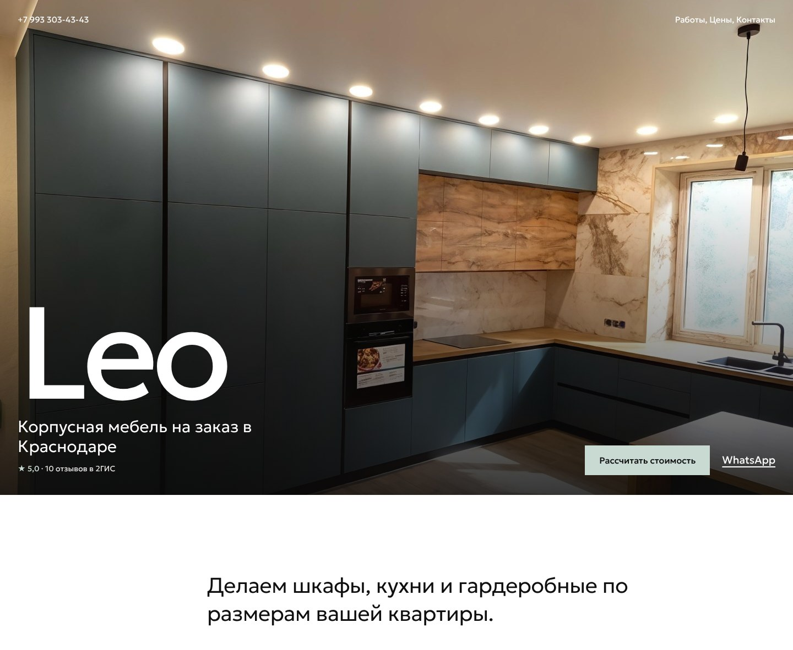

Telegram по номеру WhatsApp · +7 993 303-43-43 · 2ГИС
видео ещё не готово: текст про видео, без него не отправляйв 2ГИС Telegram не указан: если чат не откроется, пиши в WhatsApp

Здравствуйте! Я Ярослав, делаю сайты для местного бизнеса в Краснодаре. Увидел «Leo» в 2ГИС: пятёрка, 10 отзывов, а сайта нет. Собрал черновик сайта на ваших фото, на видео видно, как он работает. Тексты, фото и цвета поменяю под вас. Интересно обсудить?3. Видео out/leo/demo.mp4 ещё не собрано. Когда появится, запусти tools/send_page.py ещё раз. Скрины выше пригодятся на созвоне, они лежат в папке скрины/leo.